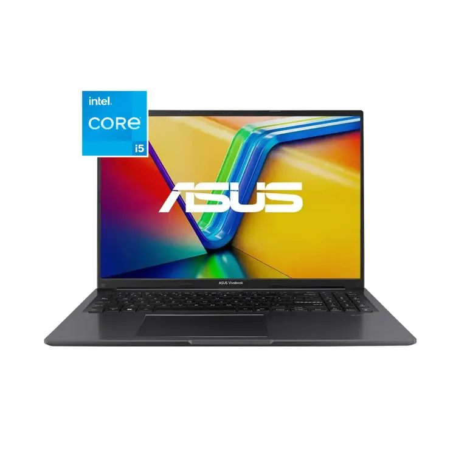

|  |
Nombre: Computador Portátil ASUS Vivobook 16" Pulgadas X1605ZA - Intel Core i5 - RAM 16GB - Disco SSD 1 TB - Negro Marca: ASUS Tamaño pantalla: 16 Pulgadas Precio: $2.349.000 |
Todo es más fluido con la potente ASUS Vivobook 16, una laptop repleta de funciones útiles y fáciles de usar que incluyen una bisagra plana de 180°, un protector de cámara web físico y teclas de función dedicadas para encender o apagar el micrófono. Tu salud está en buenas manos con ASUS Antimicrobial Guard Plus que protege las superficies que se tocan con frecuencia, y el panel táctil más grande ahora es más fácil de usar con los dedos. ¡Disfruta de la potencia fluida de Vivobook 16!
| VOLVER |
|---|